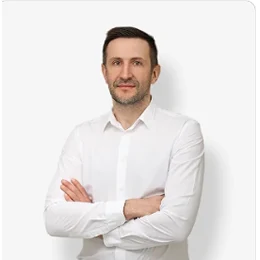

Для улыбки не нужны импланты -правильная улыбка от 5000р у детей и взрослых
запишись
Архитектура здоровья

Основатель клиники
Зубачёв Роман Николаевич
Зубачёв Роман Николаевич
наши специалисты

Архитектура здоровья
Обратите внимание на то, к чему уже привыкли.
01 / 10